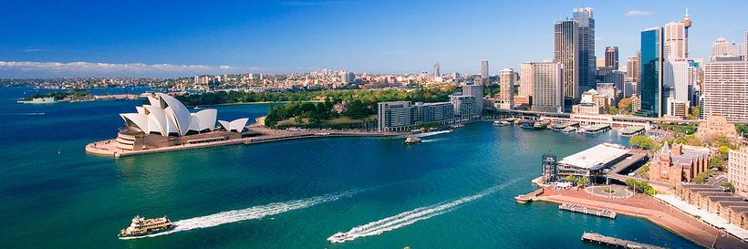
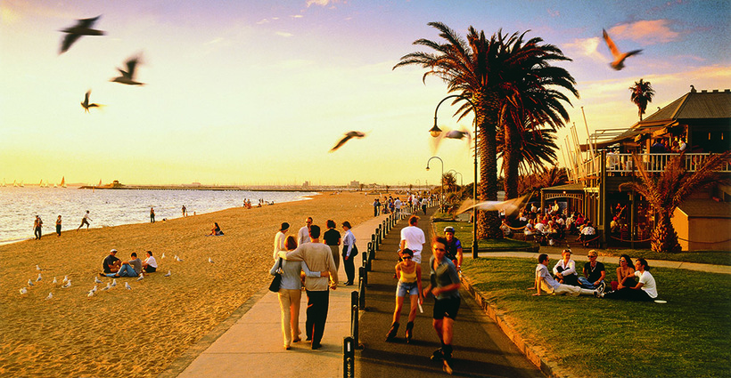
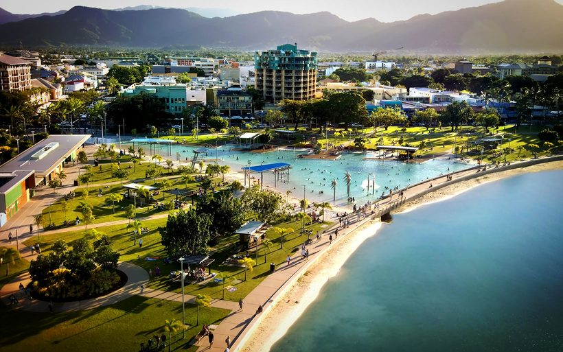
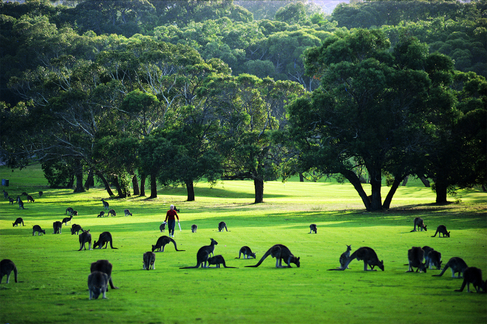

Топ міст
Сідней
Серце континенту і, мабуть, найвідоміше місто Австралії. Він створює дивне враження, ніби Київ відвідав дорогий спа-салон, після чого став в десять разів добрішим. Тут є все: гучні вулиці, тихі зелені парки, білозубі серфери, величезні бетонні музеї, пороми як вид громадського транспорту і навіть розкішні апартаменти Рассела Кроу (який, до слова, зовсім не австралієць, а справжнісінький "ківі" родом з Веллінгтона, що в Новій Зеландії).
Мельбурн
Мій коханий Мел (оззи називають його "Мелбан") є культурною столицею Австралії - його часто порівнюють з Санкт-Петербургом, і вони дійсно схожі по духу. Неможливо зрозуміти країну, не прогулявшись по набережній St.Kilda Beach, що не пообідавши в одному з ресторанів хіпстерского району Fitzroy і не полежавши на галявині Royal Botanic Gardens.
Кернс
Містечко, що приваблює туристів з усього світу, розташований на північному сході країни, в штаті Квінсленд, і в першу чергу славиться своєю близькістю до об'єкта Всесвітньої спадщини Великого Бар'єрного рифу, платом Атертон і дивовижними пляжами Коралового моря. А також самими відв'язними клубними вечірками. Не тільки іноземці, а й місцева молодь стікається в Кёрнс за дозою веселощів і атмосферою безкарності!
Голд Кост

"Золоте село" - це головний пляжний курорт країни, що має репутацію "місцевих Мальдів". Тут є все для втомленого міського жителя, який не бажає шість з половиною годин тулитися в кріслі скупого на їжу і сантиметри лоукостера до Балі. Білосніжних пляжі, блискучі шопінг-центри, величезні клуби і екстремальні парки розваг.
Брісбен
"Третє за величиною місто на східному узбережжі Австралії, де вікторіанський будиночки ховаються в тіні сучасних хмарочосів. Незважаючи на те, що над жителями штату Квінсленд місцеві жорстоко жартують, називаючи їх "гальмівними", Брізі - ідеальне місце для любителів флори і фауни. Для фанатів пухнастих ендеміків обов'язковий до відвідин заповідник коал Lone Pine Koala Sanctuary, а також Ботанічний сад Брісбена. А шанувальникам культурної програми варто брати увагу на культурний центр і планетарій сера Томаса Брісбена.